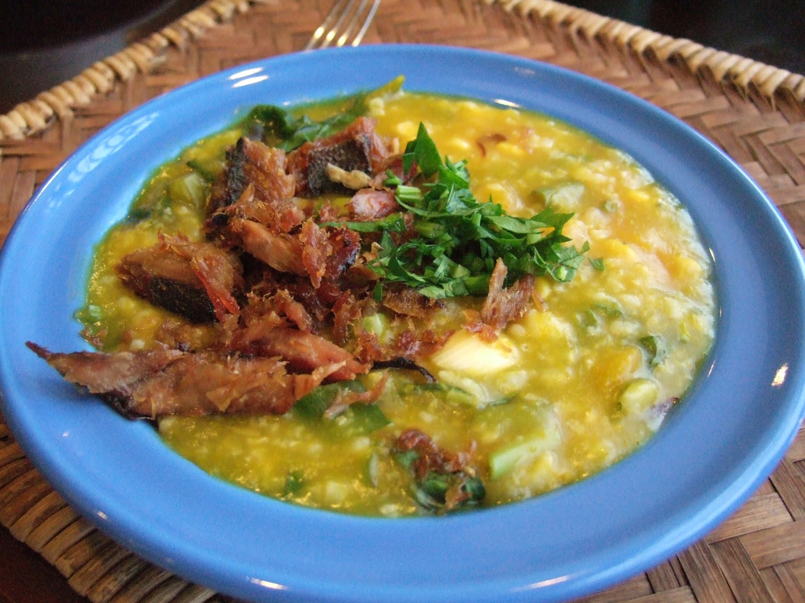

⬅ Kembali
Resep Makanan Bubur Manado
Bahan :
- 200 gram beras.
- 2 buah jagung manis dipipil
50 gram singkong potong dadu.
- 100 gram ubi kuning, potong dadu
- 1 kg labu kuning, kukus dan lumatkan dengan garpu.
- 4 liter air atau tambahkan sesuai kebutuhan
Bahan sayur
- 5 lembar daun gedi,rajang halus .
- 1 lembar daun kunyit,rajang sehalus mungkin
- 2 batang daun bawang, rajang halus.
- 2 batang daun bawang, rajang halus.
- 1 ikat kecil bayam, ambil daun
- 1 mangkuk kemangi, dari 5 ikat kecil kemangi, ambil daun dan pucuk mudanya saja.
Bumbu :
- 5 batang serai, ambil bagian putihnya saja dan memarkan.
- 2 lembar daun salam
- 1 sdm garam.
- kaldu jamur secukupnya.
- 6 bawang putih, cincang halus
- 6 bawang merah iris tipis
Bumbu Pelengkap :
- sambal dabu dabu atau sambal korek
- ikan asin goreng
Cara Memasak
- Cuci bersih beras, singkong, ubi masak dengan api kecil sampai singkong dan ubi lembut.
- Masukkan bawang putih, bawang merah terus diaduk, masukkan jagung dan labu kuning.
- Tambahkan air bila diperlukan, masukkan garam lada dan kaldu jamur aduk rata lagi.
- Terakhir masukan semua sayuran aduk rata, koreksi rasa dan angkat.
